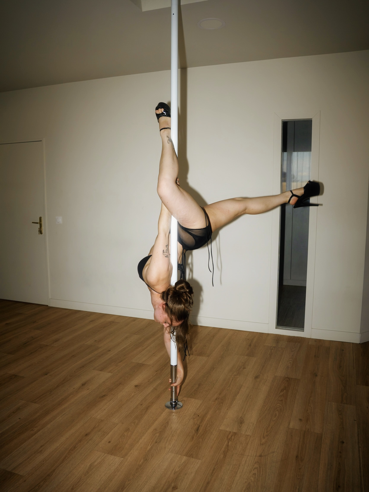

Ana
Je m'appelle Ana, et pendant longtemps, j'ai pensé que je n'aimais tout simplement pas le sport. Puis j'ai découvert la pole dance, le cerceau aérien et la souplesse… et j'ai compris que bouger pouvait être bien plus que « faire du sport ».
J'y ai trouvé de la liberté, de la confiance, du plaisir et surtout cette sensation incroyable de découvrir que mon corps était capable de bien plus que je ne l'imaginais.
Ces disciplines ont fini par prendre une place immense dans ma vie, jusqu'à me pousser à quitter un emploi stable pour créer Yely in the Air : un studio à mon image, où l'on peut commencer sans être sportif, souple ou expérimenté, et surtout progresser sans pression ni jugement.
Mon objectif ? T'accompagner avec bienveillance, exigence et beaucoup de bonne humeur, pour que tu apprennes à aimer bouger, à te faire confiance et à être fier·ère de chaque progrès !

Coline
Passionnée de pole dance depuis 5 ans, j'ai à cœur d'accompagner chaque élève dans sa propre aventure. Mon objectif est de créer un espace bienveillant où chacun peut progresser à son rythme, gagner en confiance et découvrir les capacités de son corps.
À travers mes cours, je souhaite transmettre bien plus que des figures techniques : le plaisir de bouger, la fierté de chaque progrès, le dépassement de soi et la liberté de s'exprimer.

Mélissa
La pole dance est vite devenue une véritable passion. Elle m'a donné envie de me dépasser, d'apprendre, d'expérimenter et de continuer à évoluer, jusqu'à avoir envie de la transmettre à mon tour.
Je continue à enrichir ma pratique à travers des stages et des cours réguliers auprès de différents coachs, convaincue qu'on n'a jamais fini d'apprendre.
En parallèle, je suis titulaire du CQP ALS AGEE, qui m'a permis de développer des compétences en renforcement musculaire, cardio, gym douce et pédagogie.
Dans mes cours, j'accorde une attention particulière aux bases, aux lignes, aux transitions et à la qualité du mouvement. Mon objectif est de proposer un cadre bienveillant où chacun·e peut progresser à son rythme et prendre plaisir à bouger… le tout avec une bonne dose d'humour !
© oryapole

Anita
Je m'appelle Anita et j'enseigne le yoga avec une approche bienveillante et respectueuse du corps. Formée au yoga et à la mobilité fonctionnelle, je crée des cours où l'on progresse en sécurité et à l'écoute de son corps. Je crois qu'une pratique durable est avant tout une pratique qui fait du bien. ❤️ La force, la mobilité et la souplesse se construisent naturellement avec la régularité.
Mon parcours dans le théâtre et la danse m'a appris combien il est précieux de construire une relation de confiance avec son corps — c'est pourquoi je propose plusieurs niveaux et différentes intensités, du yoga doux au yoga dynamique, où chacun peut explorer le mouvement avec curiosité et trouver sa propre manière de pratiquer.

Myriam
Passionnée par le mouvement, le bien-être et l'accompagnement, j'ai à cœur d'aider chaque personne à retrouver confiance en son corps et en ses capacités. J'adapte chacun de mes cours aux besoins, au niveau et aux objectifs de mes élèves — dans un cadre rassurant où le plaisir de bouger est au centre de chaque séance.
Au-delà du travail physique, j'aime transmettre des valeurs qui me sont chères : le dépassement de soi, le lâcher-prise, la confiance et l'équilibre entre le corps et l'esprit.

Anastassia
Forte de 6 ans d'expérience en coaching sportif et de 13 ans de carrière en gymnastique (GRS) au sein de divers clubs en France et à l'étranger, je suis ravie de rejoindre l'équipe de Yely in the Air !
Mon objectif : vous guider dans votre pratique du Pilates Reformer et vous proposer un enseignement simple, efficace et accessible à toutes. À très bientôt !

Cassandra
Passionnée par la pole dance et désireuse de vous transmettre cet art avec enthousiasme, je place l'humain et la bienveillance au cœur de ma pédagogie.
Mon objectif est de vous proposer des cours (technique et chorégraphie) qui vous valorisent, tout en évoluant dans un cadre sécurisant, convivial et respectueux de chacun.
Que vous souhaitiez développer votre force, exprimer votre créativité ou simplement lâcher prise, je vous accompagne pour progresser à votre rythme, prendre confiance en vous et vous dépasser dans la bonne humeur !